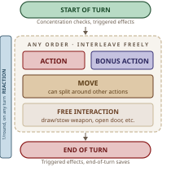
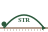
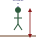
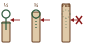
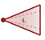
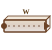

| Attack Melee or ranged. d20 + Prof + STR/DEX mod ≥ AC → hit. Nat 20 = crit. Nat 1 = auto-miss. |
| Magic Cast spell, use magic item/feature. Only one spell slot/turn (cantrips free). |
| Dash Gain extra movement equal to your Speed this turn. |
| Disengage Your movement doesn't provoke Opportunity Attacks this turn. |
| Dodge Attacks against you have Disadv. Adv on DEX saves. Ends if Speed = 0. |
| Help Ally within 5 ft gains Adv on next check (you must have Prof in that skill) or attack roll. |
| Hide DC 15 DEX (Stealth). ¾/total cover or heavy obscurement → Invisible. |
| Ready Set trigger + response (action/move). Uses Reaction. Spells need Conc. |
| Search WIS (Perception) or INT (Investigation). Find hidden creatures, objects, clues. |
| Study INT (Arcana, History, Investigation, Nature, Religion). Recall lore, examine creature/object. |
| Influence CHA (Persuasion/Deception/Intimidation), WIS (Animal Handling). DC 10 favor · DC 20 risk/sacrifice. |
| Utilize Use a nonmagical object, activate an item, or interact with environment. |



| Pace | /Min | /Hour | /Day | Effect |
|---|---|---|---|---|
| Fast | 400 ft | 4 mi | 30 mi | −5 passive Perc. |
| Normal | 300 ft | 3 mi | 24 mi | — |
| Slow | 200 ft | 2 mi | 18 mi | Can use Stealth |
| Size | Space | Example |
|---|---|---|
| Tiny | 2½ × 2½ ft | Imp, Sprite |
| Small | 5 × 5 ft | Halfling, Goblin |
| Medium | 5 × 5 ft | Human, Orc |
| Large | 10 × 10 ft | Ogre, Horse |
| Huge | 15 × 15 ft | Giant, Treant |
| Gargantuan | 20+ × 20+ ft | Dragon, Tarrasque |
| Level | 1 | 2 | 3 | 4 | 5 | 6 |
|---|---|---|---|---|---|---|
| d20 Penalty | −2 | −4 | −6 | −8 | −10 | Death |
| Speed | −5 | −10 | −15 | −20 | −25 | Death |
| Level | Bonus |
|---|---|
| 1–4 | +2 |
| 5–8 | +3 |
| 9–12 | +4 |
| 13–16 | +5 |
| 17–20 | +6 |
| Material | AC |
|---|---|
| Cloth, Paper | 11 |
| Crystal, Glass | 13 |
| Wood, Bone | 15 |
| Stone | 17 |
| Iron, Steel | 19 |
| Adamantine | 23 |
| Size | Frag. | Resil. |
|---|---|---|
| Tiny | 2 (1d4) | 5 (2d4) |
| Small | 3 (1d6) | 10 (3d6) |
| Medium | 4 (1d8) | 18 (4d8) |
| Large | 5 (1d10) | 27 (5d10) |
| Very Easy | 5 | Hard | 20 |
| Easy | 10 | Very Hard | 25 |
| Moderate | 15 | Nearly Impossible | 30 |
| Half | +2 AC, +2 DEX |
| ¾ | +5 AC, +5 DEX |
| Total | Can't target |

| Severity | Lvl 1–4 | 5–10 | 11–16 | 17+ |
|---|---|---|---|---|
| Setback (minor burn, fall) | 1d10 | 2d10 | 4d10 | 10d10 |
| Dangerous (lightning, cave-in) | 2d10 | 4d10 | 10d10 | 18d10 |
| Deadly (lava, crushed) | 4d10 | 10d10 | 18d10 | 24d10 |


| d8 | What Asserts Itself |
|---|---|
| 1 | Threat — ambush, hazard, collapse |
| 2 | Tension — hostiles at distance |
| 3 | Social — someone demands now |
| 4 | Environment — weather, terrain, planar |
| 5 | Resources — gear breaks, supplies lost |
| 6 | Moral — no right answer |
| 7 | Opportunity — loot, rumor, ally |
| 8 | Strange — lean into mystery |
| 2d6 | Starting Stance |
|---|---|
| 2 | Hostile — acts against party |
| 3–5 | Suspicious — guarded, watching |
| 6–8 | Neutral — cautious, wait-and-see |
| 9–11 | Friendly — willing to help/trade |
| 12 | Eager ally — offers more |
| d6 | Twist — When Scene Goes Flat |
|---|---|
| 1 | Third party — another faction arrives |
| 2 | Clock starts — 2–4 rounds until change |
| 3 | Ground shifts — terrain/environment |
| 4 | Someone lied — info was wrong |
| 5 | Hidden stakes — deeper objective |
| 6 | Collateral — something at risk |
| d8 | Core Drive |
|---|---|
| 1 | Power — control, status, authority |
| 2 | Safety — protect self/family/community |
| 3 | Revenge — someone wronged them |
| 4 | Knowledge — secrets, truth, research |
| 5 | Wealth — money, land, trade advantage |
| 6 | Freedom — escape obligation or debt |
| 7 | Loyalty — serving person/faction/ideal |
| 8 | Legacy — be remembered |
| d8 | Hidden Angle |
|---|---|
| 1 | Trap — who benefits from the bait? |
| 2 | Wrong target — real threat is elsewhere |
| 3 | Ticking clock — what if they're too slow? |
| 4 | Divided loyalties — serving two masters |
| 5 | Collateral — innocents get hurt |
| 6 | Debt incurred — help creates obligation |
| 7 | Info is wrong — what's not true? |
| 8 | Clean — this time it's simple |
| d12 | What Makes This Eberron |
|---|---|
| 1 | Manifest zone — physics go wrong |
| 2 | House agent — wants, won't say why |
| 3 | Magitech breaks — rail, stone, lift |
| 4 | Last War scar — relic wakes up |
| 5 | Aberrant mark — doing too much |
| 6 | Warforged — identity, memory |
| 7 | Morgrave find — Xen'drik, wrong |
| 8 | Dreaming Dark — stolen dreams |
| 9 | Prophecy — NPC quotes it blind |
| 10 | Trust no one — changeling? rakshasa? |
| 11 | House rivalry — check lore |
| 12 | The newspaper — Chronicle reports it |